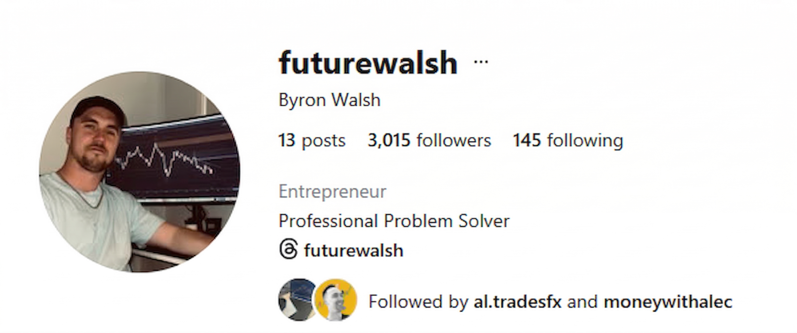
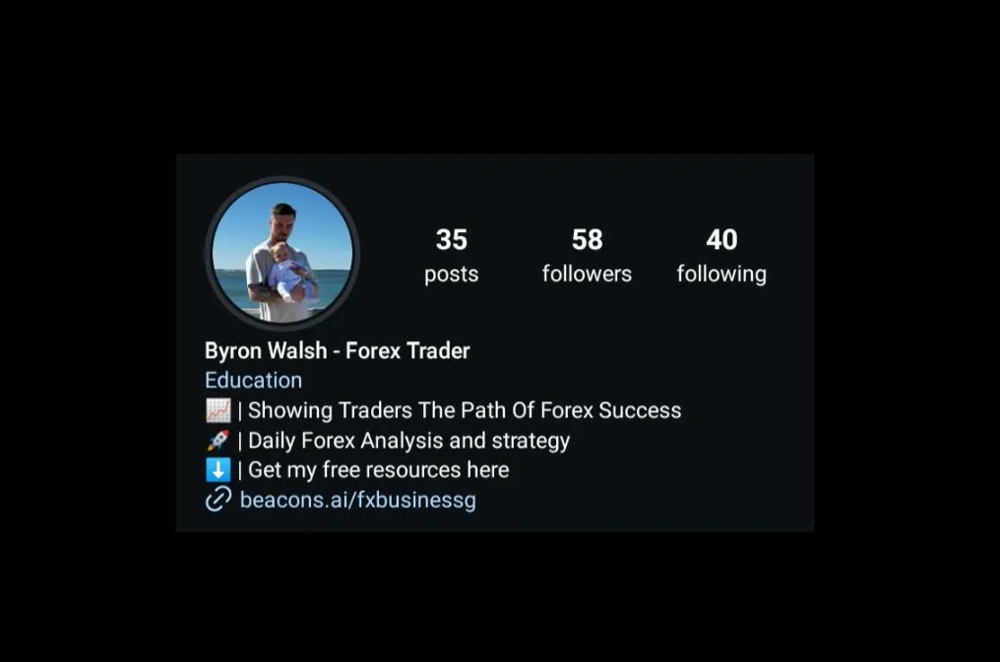
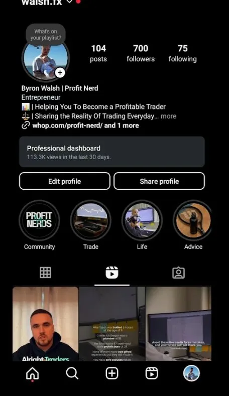

Byron Walsh is a forex trader who knew his craft but had no presence, no content direction, and no idea how to build one. I took over his Instagram end-to-end strategy, content, profile, everything and built his brand from the ground up in three months.
Byron found me through my Instagram page, which had around 7–8K followers at the time. He reached out, we talked, and it was clear he had real knowledge but his profile wasn't showing any of it. The bio was weak, the content had no direction, and there was nothing that would make a stranger stop and take him seriously as a forex trader.
"He had the expertise. The profile just wasn't showing it to anyone."
He hired me to handle everything. Not just posting full ownership of his content strategy, production, profile setup, and brand direction. I researched the forex content space, found the angles that were actually working, and built a system that would position Byron as a credible, trustworthy voice worth following.
Over three months I published 100+ pieces of content carousels, B-roll reels, motivational videos, educational posts each built with one goal: move someone from stranger to follower to believer.


